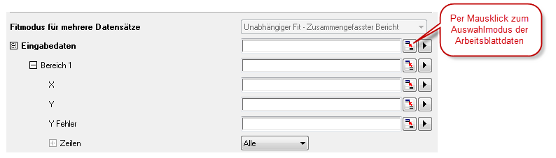
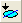

Datenanalyse
Data-Analysis
Einführung
Origin verfügt über leistungsstarke Hilfsmittel für all Ihre analytischen Aufgaben, einschließlich Peakanalyse, Kurvenanpassung, Statistik und Signalverarbeitung. Die meisten von Origins Analysehilfsmitteln können eine Reihe von zusammen gespeicherten Einstellungen verwenden -- bezeichnet als ein Dialogdesign --, wodurch wiederholte Analysen ein Kinderspiel werden. Außerdem kann die Ausgabe einer Operation als Eingabe einer anderen Operation verwendet werden. Dies ermöglicht Ihnen das Aufstellen einer Operationskette, deren Ergebnisse bei Änderungen an den Daten aktualisiert würden, z. B. beim Importieren einer Reihe von Datendateien.
Die folgenden Abschnitte behandeln (1) das Auswählen der Daten, die Sie analysieren möchten, und (2) die Hilfsmittel, die in Origin und OriginPro für die Analyse der Daten verfügbar sind. Bitte lesen Sie in dem Kapitel Wiederkehrende Aufgaben bearbeiten dieses Handbuchs weitere Informationen über Analysevorlagen, Dialogdesigns und weitere Zeit sparende Funktionen.
 | Apps sind Add-ons, die Origins Funktionsumfang der grafischen Darstellung und Analyse erweitern. Viele mit der Analyse verwandte Hilfsmittel sind kostenlos über OriginLabs Dateiaustausch verfügbar. Um mehr über die Apps in Origin zu erfahren, lesen Sie das Kapitel Apps für Origin in diesem Handbuch. |
Dateneingabe
Origins Analysehilfsmittel können für Arbeitsmappen-, Matrix- und/oder Diagrammdaten verwendet werden, abhängig vom Hilfsmittel. Per Standard werden Analysen für ausgewählte Daten durchgeführt (beachten Sie, dass im Fall von Matrixdaten diese "ausgewählten Daten" das Matrixblatt bzw. Matrixobjekt sind, abhängig von der Analyse). Beim Arbeiten mit Arbeitsblatt- oder Diagrammdaten möchten Sie die Analyse vielleicht auf eine Teilmenge Ihres Datensatzes beschränken, beispielsweise einen bestimmten Bereich der Zeilen oder Spalten in einem Arbeitsblatt oder einem bestimmten Bereich der X-Achse in einem Diagramm.
Die Datenauswahl kann vor oder nach dem Öffnen eines Analysedialogs gemacht werden. Die meisten von Origins auf X-Funktionen basierenden Analysehilfsmitteln haben einen Zweig für die Eingabe mit einem Bedienelement für die Bereichsauswahl, mit der Sie Ihre Daten interaktiv auswählen (sie wird weiter unten erläutert).
Daten im Arbeitsblatt auswählen
Daten auswählen, Arbeitsblatt Wenn Sie einen Bereich der Arbeitsblattdaten markieren und dann einen der auf einer X-Funktionen basierenden Dialoge öffnen -- dies umfasst so gut wie alle Dialoge, die über die Menüs Analyse oder Statistik aufgerufen werden --, können Sie sehen, dass Ihre Bereichsauswahl bereits in den Dialog Eingabedaten eingegeben ist. Die meisten Anwender empfinden es als einfacher, zuerst die Arbeitsblattdaten auszuwählen und danach den entsprechenden Analyse- oder Statistikdialog zu öffnen, um festzulegen, welche Daten Sie analysieren möchten.
Wenn Sie einen der X-Funktionsdialoge öffnen, ohne Ihre Daten vorausgewählt zu haben, sollten Sie beim Öffnen des Dialogs zuerst Daten im Zweig Eingabedaten auswählen:
- 
- Klicken Sie auf das Bedienelement der Bereichsauswahl neben Eingabe (oder Eingabedaten). Der Dialog wird minimiert.
- Wählen Sie Ihre Arbeitsblattdaten im Arbeitsblatt aus und klicken Sie dann auf die Schaltfläche
 auf der rechten Seite des minimierten Dialogs. Der Zweig Eingabedaten zeigt jetzt den ausgewählten Bereich.
auf der rechten Seite des minimierten Dialogs. Der Zweig Eingabedaten zeigt jetzt den ausgewählten Bereich.
Beachten Sie, dass Sie keine vollständigen Datensätze (Spalten) markieren müssen. Sie können eine Teilmenge Ihrer Arbeitsblattdaten auswählen. Die Analysen werden auf diese ausgewählte Teilmenge beschränkt. Wenn die Analyse mehrere Datensätze unterstützt, können Sie mehrere Bereiche wie z.B. mehrere Y-Spalten oder Y-Bereiche auswählen. Wenn die Analyse nur einen Datensatz unterstützt, können Sie vielleicht mehrere Bereiche auswählen, es wird aber nur der erste Bereich in der Analyse ausgewählt.
Notizen
- Der Zweig Eingabedaten hat eine hierarchische Struktur. Wenn die Analyse mehrere Datensätze unterstützt, könne Sie mehrere Bereiche unter Eingabedaten hinzufügen. Diese werden als Bereich 1, Bereich 2 etc. angezeigt. Jedes verfügt über die entsprechenden Bedienelemente für X, Y, Fehler und Zeile.
- Wenn Sie mit der Maus über jede Ebene fahren, wird ein Tooltipp angezeigt, der Sie darüber informiert, von welcher Ebene die Daten stammen (d.h. Mappe, Blatt und Spalte).
- Über das Bedienelement Zeilen unter jedem Bereichsknoten können Sie den Bereich nach Zeilenindex oder X-Wert festlegen. Wenn Sie den gleichen Zeilenbereich auf alle Bereiche unter Eingabedaten anwenden möchten, klicken Sie auf die Pfeilschaltfläche rechts vom Bereichsknoten und wählen Sie Zeilenbereich auf alle anwenden.
- Abhängig davon, wo Sie sich in der Hierarchie der Eingabedaten befinden, kann die Schaltfläche der Bereichsauswahl einige Einschränkungen aufweisen (wenn Sie z. B. auf das Bedienelement der Bereichsauswahl neben Y klicken, obwohl Sie mehrere Spalten in einem Arbeitsblatt ausgewählt haben, wird nur die erste Spalte übernommen).
- Durch Klicken auf die Schaltfläche mit dem Pfeil rechts von dem Bedienelement der Bereichsauswahl werden weitere Auswahloptionen angezeigt. Sie können hier z. B. einzelne Arbeitsblattspalten auswählen, um eine schnelle Datenauswahl zu treffen.
- Abhängig von der Ebene, auf der Sie sich befinden, können sich die Auswahloptionen unterscheiden, wenn Sie auf die Schaltfläche Pfeil klicken. Zum Beispiel wird durch Klicken auf die Schaltfläche "Pfeil" neben Eingabedaten und auf das Menüelement Spalten auswählen der Spaltenbrowser geöffnet. Dieser gibt Ihnen die Möglichkeit, mehrere Spalten aus verschiedenen Arbeitsblättern auszuwählen.
- Verwenden Sie die Auswahlliste Liste der Datensätze, um zu filtern, aus welchen Blättern Sie auswählen möchten. Die Liste im oberen Bedienfeld kann sortiert werden, indem Sie auf einen der Spaltenköpfe klicken. Auf diese Weise wird es z.B. einfach alle Spalten auszuwählen, die den gleichen Langname oder die gleichen Kommentare haben.
- Klicken Sie dann auf die Schaltfläche Hinzufügen, um die Spalte zu Ihrer Auswahlliste im unteren Bedienfeld hinzuzufügen.
- Um den Dateneingabebereich eines der Datensätze zu modifizieren, klicken Sie auf die Bereichsschaltfläche jeweils rechts von den zum unteren Bedienfeld hinzugefügten Datensätzen und bearbeiten Sie die Werte Von und Bis.
Daten in einem Diagramm auswählen
Daten auswählen, Diagramm Aktiver Datensatz Wenn Sie bei aktivem Diagrammfenster eines der Hilfsmittel im Menü Analyse auswählen, besteht das Standardverhalten für den Analysedialog darin, den ausgewählten Bereich des aktiven Datensatzes als Ihre Eingabedaten zu öffnen (beachten Sie, dass Analysedialoge einen Knoten Eingabedaten umfassen, der Anpassungen zulässt --Hinzufügen von mehr Datensätzen mit der interaktiven Schaltfläche der Bereichsauswahl, Ändern eines Datenbereichs etc.).
Die Diagrammliste und die aktive Datenzeichnung
Die aktive Datenzeichnung ist diejenige, die in der Datenliste (unten im Menü Daten) mit einem Häkchen daneben gezeigt wird. Wenn der aktive Diagrammlayer eine Zeichnungsgruppe enthält, wird nach dem Standardverhalten die erste Zeichnung in der Gruppe zur aktiven Datenzeichnung (beachten Sie das "g1" neben jedem Bereich im folgenden Bild, das darauf hinweist, dass alle zur Zeichnungsgruppe 1 gehören). Sie können andere Zeichnung aktivieren, indem Sie auf eine der anderen Datenzeichnungen klicken, die unten im Menü Daten aufgelistet sind. Wenn Sie danach einen Analysedialog öffnen, wird diese neu ausgewählte Zeichnung als Ihre Eingabedaten aufgelistet.
Für die meisten Zwecke können Sie die Datenliste jedoch ignorieren und Ihre Zeichnungsdaten direkt im Diagrammfenster oder mittels der Objektverwaltung auswählen:
- Wenn Ihre Datenzeichnungen Teil einer Zeichnungsgruppe sind, wählen Sie die gesamte Gruppe, indem Sie SHIFT drücken und auf eine Zeichnung klicken. Alternativ klicken Sie auf das Gruppensymbol in der Objektverwaltung. Beides setzt den Eingabebereich auf alle Zeichnungen in der Gruppe.
- Um nur eine einzelne Zeichnung auszuwählen, -- egal ob diese unabhängig oder Teil einer Gruppe ist -- klicken Sie einmal auf die Zeichnung. Alternativ klicken Sie auf das Zeichnungssymbol in der Objektverwaltung. Beides setzt den Eingabebereich auf nur die ausgewählte Zeichnung.
| Sie können den aktiven Datensatz auch kennzeichnen, indem Sie ein rotes Rechteck um den Legendeneintrag der Zeichnung platzieren. Im Fall von gruppierten Zeichnungen wird das rote Rechteck auf der ersten Zeichnung in der Gruppe gezeigt.
Um diese Funktion ein-/auszuschalten:
- Klicken Sie auf Ihr Diagrammfenster, wählen Sie Format: Seite, klicken Sie auf die Registerkarte Legenden/Titel und aktivieren bzw. deaktivieren Sie Aktiven Datensatz hervorheben.
- Wählen Sie die Diagrammlegende aus, klicken Sie dann mit der rechten Maustaste auf sie und wählen Sie Legende. Aktivieren/deaktivieren Sie dann den Menüeintrag Aktiven Datensatz kennzeichnen.
- Wählen Sie die Diagrammlegende aus, klicken Sie dann mit der rechten Maustaste auf sie und wählen Sie Legende: Legende aktualisieren. Aktivieren bzw. deaktivieren Sie das Kontrollkästchen Aktiven Datensatz kennzeichnen.
|
X-Skalierungsbereich benutzerdefiniert anpassen mit Hilfe der Bedienelemente "Zeilen" des Analysedialogs
Sie können den Datenbereich mit Hilfe der Bedienelemente Zeilen im Zweig Eingabdaten der meisten Analysedialoge anpassen. Wenn Sie einen geöffneten Analysedialog vor sich sehen:
- Klicken Sie auf den Zweig Eingabedaten, um ihn zu erweitern.
- Wählen Sie in der Auswahlliste Zeilen die Option Nach Zeile oder Nach X und geben Sie Ihre Werte für Von und Bis ein. Beachten Sie, dass jeder Bereich N seine eigenen Zeilenbedienelemente hat.
X-Skalierungsbereich benutzerdefiniert anpassen mit Hilfe des Minidialogs der Achsenskalierung
Vor dem Öffnen eines Analysedialogs ...
- Klicken Sie auf eine Achse. Klicken Sie dann auf die Schaltfläche Achsenskalierung in der Minisymbolleiste, um den Dialog Achsenskalierung zu öffnen.
- Passen Sie die X-Achsenskalierung an Ihren gewünschten Bereich an.
- Öffnen Sie jetzt Ihren Analysedialog (z. B. Lineare Anpassung) und klicken Sie auf die Pfeilschaltfläche neben dem Feld Eingabedaten. Wählen Sie im Kontextmenü X-Skalierungsbereich verwenden:
Wie Sie sehen können, wurde der benutzerdefiniert angepasste Skalierungsbereich der X-Achse auf dem Diagramm verwendet, um den Eingabedatenbereich für Ihre Analyse festzulegen (Zeilen = Nach X).
Daten grafisch auswählen mit Hilfe des regionalen Datenselektors
Sie können einen Datenbereich mit Hilfe des regionalen Datenselektors grafisch auswählen: Daten auswählen, DiagrammRegionaler Datenselektor
- Klicken Sie bei einem aktiven Diagrammfenster auf die Schaltfläche Regionaler Datenselektor auf der Symbolleiste Hilfsmittel und halten Sie sie gedrückt. Wählen Sie die Schaltfläche Auswahl in aktiver Zeichnung oder Auswahl in allen Zeichnungen.
- Zeichnen Sie ein Rechteck oder ein Freihandobjekt, um einen Bereich des Diagramms auszuwählen. Beachten Sie, dass Sie die Leertaste drücken können, um zwischen den Modi Rechteck
 und Freihand zu wechseln.
und Freihand zu wechseln.
Wenn Sie Ihre Auswahl treffen, werden Datenmarkierer auf dem Diagramm angezeigt, die den/die ausgewählten Bereich/e kennzeichnen. Sie können jetzt Origins Analysehilfsmitteln (z. B. lineare Anpassung) dazu verwenden, eine Analyse für die Auswahl durchzuführen. Beachten Sie aber, dass einige Analysedialoge nicht für mehrere Datenbereiche verwendet werden können. Der Dialog der Glättung beispielsweise (Analyse: Signalverarbeitung: Glätten) glättet nur die Daten in dem aktiven Datensatz oder einer einzelnen ausgewählten Zeichnung.
| Es gibt eine neue Minisymbolleiste zum Steuern des X-Skalierungsbereich, wenn Sie die Datenmarkierer verwenden. Klicken Sie auf einen Datenmarkierer und verwenden Sie die Schaltflächen zum Anzeigebereich festlegen bzw. Auf vollen Bereich zurücksetzen.
|
 |
Tutorial: Lineare Regression für einen X-Teilbereich
- Importieren Sie die Datei \Samples\Curve Fitting\Exponential Decay.dat in eine neue Arbeitsmappe.
- Markieren Sie alle Y-Spalten und erstellen Sie ein Liniendiagramm.
- Klicken Sie auf die Schaltfläche Regionaler Datenselektor auf der Symbolleiste Hilfsmittel und wählen Sie dann Auswahl auf allen Zeichnungen
 . .
- Ziehen Sie ein Rechteck auf, um die Endbereiche der drei Kurven ungefähr zwischen Werten 0,6 und 1,0 der X-Achse zu markieren.
- Wählen Sie Analyse: Anpassen: Linearer Fit im Menü, um den Dialog Lineare Anpassung zu öffnen.
- Im Zweig Eingabedaten sind drei Bereiche angegeben. Fahren Sie mit der Maus über den Zweig Eingabedaten. Der Tooltipp zeigt 1X,1Y, ... 3X und 3Y.
- Wenn Sie die Datenauswahl ändern möchten, klicken Sie auf die Pfeilschaltfläche in den Eingabedaten und wählen Sie Alle Daten des Diagramms erneut auswählen. Der Dialog wird minimiert. Treffen Sie erneut Ihre Datenauswahl in dem Diagramm, indem Sie ein Rechteck aufziehen und klicken Sie dann auf die Schaltfläche auf der rechten Seite des minimierten Dialogs. Die neue Datenauswahl wird im Zweig Eingabedaten gezeigt.
- Übernehmen Sie die Standardeinstellungen für die lineare Anpassung und klicken Sie auf OK, um den Dialog zu schließen. Die lineare Anpassung wird für alle drei Kurven über den ausgewählten Bereich durchgeführt.
|
| Zusätzlich zu der Datenauswahl und den Maskierungsmethoden, die in diesem Abschnitt erläutert werden, enthält Origin die Hilfsmittel Datenfilterung und Datenreduktion. Bitte besuchen Sie die verlinkten Seiten, um Einzelheiten zu erfahren. |
Datenmarkierung bearbeiten
Um eine Datenmarkierung zu bearbeiten: Datenmarkierungen
- Klicken Sie mit der rechten Maustaste auf eine Datenmarkierung und wählen Sie Bearbeiten oder klicken Sie doppelt auf eine Datenmarkierung, um einen Datenbereich zu modifizieren. Die roten Markierungen verändern ihre Farbe und werden dunkel mit Pfeilen an beiden Enden. Auch der Cursor verwandelt sich in ein Fadenkreuz. Ziehen Sie die Markierung am Anfang bzw. Ende in eine neue Position oder verwenden Sie eine der unten aufgeführten Tastaturkombinationen und ändern Sie den Datenbereich. Um den Bearbeitungsmodus zu verlassen, klicken Sie doppelt auf die Markierung oder drücken Sie die Taste Enter.
- Wenn Sie mit der rechten Maustaste auf die Datenmarkierung klicken, werden weitere Optionen gezeigt, wie Markierungen löschen, Daten löschen etc.
| Hinweis: Wenn Sie das Hilfsmittel Regionaler Datenselektor verwendet haben, um Markierungen auf mehreren Zeichnungen zu positionieren (Auswahl auf allen Zeichnungen), seien Sie sich bewusst, dass bewegliche Markierungen den Datenbereich von nur der aktiven Zeichnung beeinflussen; die Bereiche der anderen ausgewählten Zeichnungen folgen dem der aktiven Zeichnung nicht. Dies ist eine Einschränkung des regionalen Datenselektors. |
Sie können auch Tastaturkombinationen verwenden, um Datenmarkierungen auszuwählen und zu bearbeiten.
- Wählen Sie Datenmarkierungen mit diesen Tasten aus:
| Tastenkombination |
Aktion |
| s |
Sie wählen das erste Paar der Datenmarkierungen auf dem Diagramm aus (markiert mit "1"). |
| Tab |
Sie wählen das nächste Paar der Datenmarkierungen aus (nicht im Bearbeitungsmodus) oder die andere Datenmarkierung des Paars (im Bearbeitungsmodus der Markierung). |
| Home/Pos1 |
Sie kehren zur ersten Datenmarkierung zurück. |
| Ende |
Sie springen zur letzten Datenmarkierung. |
- Aktivieren und bearbeiten Sie die Datenmarkierung mit diesen Tastenkombinationen:
| Tastenkombination |
Aktion |
| Enter |
Die ausgewählte Datenmarkierung wird für die Bearbeitung aktiviert. (Drücken Sie erneut Enter, um den Datenauswahlmodus zu verlassen.) |
| Pfeil |
Die aktive Datenmarkierung wird genau zu einem Datenpunkt verschoben. |
| Strg/Shift + Pfeil |
Die aktive Datenmarkierung wird zu mehreren Datenpunkten verschoben. |
| Löschen |
Die aktive Datenmarkierung wird gelöscht. |
Unterschied zwischen Daten- und Analysemarkierungen
Datenmarkierungen Analysemarkierungen
- Datenmarkierungen definieren einen Teilbereich, den Sie mit Hilfe des Hilfsmittels Datenselektor bestimmen.
Wenn Sie die Datenmarkierungen in dem Diagramm entfernen möchten, können Sie im Hauptmenü Daten: Datenmarkierer löschen wählen oder auf die Schaltfläche Datenmarkierer löschen  in der Symbolleiste Markierungen und Schlösser klicken.
in der Symbolleiste Markierungen und Schlösser klicken.
- Wenn die Analyseroutine abgeschlossen ist, werden die Datenmarkierungen mit Analysemarkierungen ersetzt. Standardmäßig zeigen Analysemarkierungen nicht, ob die Analyse für den gesamten Datensatz durchgeführt wurde. Wenn sie für einen Teilbereich durchgeführt wurde, werden die Analysemarkierungen am Anfang und am Ende des Teilbereichs angezeigt. Sie können den Datenbereich modifizieren und Ihre Analyse erneut ausführen, indem Sie mit der rechten Maustaste auf eine Analysemarkierung klicken und Parameter ändern wählen. Ändern Sie den Eingabedatenbereich und führen Sie die Analyse erneut aus.
Hinweis:- Wenn Sie Neu berechnen im Analysedialog auf Kein gesetzt haben, werden keine Analysemarkierungen erzeugt.
- Daten- und Analysemarkierungen werden nicht exportiert, wenn Sie Datei: Grafiken exportieren wählen.
- Um den gleichen Bereich erneut für eine andere Analyse auszuwählen, klicken Sie auf das grüne Schloss und wählen Sie Eingabedaten mit Datenmarkern zeichnen, um ein neues Diagramm zu erstellen und eine Analyse auf ihm auszuführen.
- Es gibt eine Symbolleiste Markierungen und Schlösser, über die Analysemarkierungen und Schlösser gesteuert werden wie Markierung zeigen/verbergen
 , um Analysemarkierungen ein- und auszuschalten etc. Es steht auch ein Untermenü Analysemarker zur Verfügung, das Sie über das Menü Daten erreichen oder indem Sie mit der rechten Maustaste auf eine Analysemarkierung oder ein grünes Schloss klicken und Analysemarker wählen. , um Analysemarkierungen ein- und auszuschalten etc. Es steht auch ein Untermenü Analysemarker zur Verfügung, das Sie über das Menü Daten erreichen oder indem Sie mit der rechten Maustaste auf eine Analysemarkierung oder ein grünes Schloss klicken und Analysemarker wählen.
|
Hilfsmittel Punkte auswählen
Sie können die Datenpunkte im Diagramm mit Hilfe des Hilfsmittels Datenpunkte auswählen auswählen. Dies funktioniert am besten bei Punkt- oder Punkt-Liniendiagramme von kleineren Datensätzen.
- Wählen Sie Daten: Datenpunkte auswählen. Der Dialog Punkte auswählen wird aufgerufen.
- Sie können mit dem quadratischen Fadenkreuz die Koordinaten der aktuellen Datenpunkte im Dialog Punkte auswählen ablesen (ebenso die Datenquelle). Klicken Sie doppelt auf den Punkt, den Sie auswählen möchten, bis das Fadenkreuz rund wird. Die tatsächlichen X- und Y-Werte werden aufgezeichnet, und die Gesamtanzahl der ausgewählten Punkte wird vorwärts gezählt.
- Sobald Sie mit der Auswahl fertig sind, klicken Sie auf die Schaltfläche Fertig, um die Ergebnisse in einer neuen Arbeitsmappe auszugeben.
Daten hervorheben
In einigen Fällen kann die Option Daten hervorheben auf der Symbolleiste Hilfsmittel nützlich zum Auswählen eines Teils Ihrer Daten für die weitere Analyse sein. Sie haben zum Beispiel ein 2D-Punktdiagramm und interessieren sich für Datenpunkte in einem bestimmten Bereich des Diagramms.
- Klicken Sie auf die Schaltfläche Daten hervorheben
 in der Symbolleiste Hilfsmittel.
in der Symbolleiste Hilfsmittel.
- Heben Sie die gewünschte Gruppe von Datenpunkten hervor. Beachten Sie, dass Sie zwischen den Auswahlmodi Rechteck und Freihand wechseln können, indem Sie die Leertaste drücken, während das Hervorhebungshilfsmittel aktiv ist. Die Auswahl von Punkte im Diagramm hebt gleichzeitig ausgewählte Zeilen im Quellarbeitsblatt hervor.
- Gehen Sie zum Quellarbeitsblatt, klicken Sie mit der rechten Maustaste auf sie und wählen Sie Blatt für Teildatensatz erstellen.
Sie haben jetzt ein zweites Blatt mit dem Namen wcopyN, das nur die Datenpunkte enthält, die Sie im Diagramm ausgewählt haben.
Weitere Informationen finden Sie im Abschnitt zum Hilfsmittel Daten hervorheben.
Datenausgabe
Origins Analysehilfsmittel haben normalerweise einen Zweig Ausgabe (der genaue Name variiert je nach Hilfsmittel), in dem Sie die gewünschte Ausgabe festlegen können und wo sie ausgegeben werden soll. Dies ist der Ausgabezweig des Hilfsmittels Integration.
Die Ausgabe kann in verschiedene Ziele erfolgen -- ein Bereich von Arbeitsblattzellen oder -spalten oder ein Arbeitsblatt, eine Arbeitsmappe, ein Matrixblatt oder ein Diagrammlayer. Die Ausgabeoptionen sind sowohl vom Zielobjekt als auch vom Fenstertyp, der aktiv war, als das Hilfsmittel geöffnet wurde, abhängig. Sie können Ihr Ausgabeziel bestimmen, indem Sie:
- es mit Hilfe einer Standardbereichsnotation direkt in das entsprechende Textfeld eingeben.
- Daten mit der interaktiven Bereichssteuerung auswählen.
- Ihr Ziel mit Hilfe einer Reihe von vordefinierten Bereichszeichenketten eingeben oder auswählen.
Da es sich hier um ein Einführungshandbuch handelt, beschränken wir uns an dieser Stelle auf die einfachste Form -- die Verwendung der vordefinierten Bereichszeichenkette. Weitere Informationen zu den anderen Optionen finden Sie unter den obigen Links.
Ausgabe mit Hilfe von Bereichszeichenketten festlegen
Beachten Sie, wenn Sie das Bild oben betrachten, dass die Bereichszeichenketten in < > eingeschlossen sind. Gültige Zeichenketten unterscheiden sich von Dialog zu Dialog (zum Beispiel ist <Quelle> in der Liste Mappe im Zweig Angepasste Werte ausgeben in im Dialog Lineare Anpassung verfügbar, wird aber im Dialog Glätten nicht zum Festlegen der Ausgabe verwendet).
Die am meisten verwendeten Eingaben sind:
- <Keine>: Keine Ausgabe erzeugen
- <neu>: Erstellen eines neuen Origin-Objekts -- eine Spalte, ein Worksheet, ein Diagramm usw.
- <Eingabe>: Verwenden des Eingabeobjekts für die Ausgabe
Sie können diese Zeichenketten direkt in das Bearbeitungsfeld eingeben. Die einfachste Möglichkeit ist jedoch, sie einfach über das Ausklappmenü auszuwählen (Optionen variieren je nach Hilfsmittel). Alternativ können Sie auf die Schaltfläche Benutzerdefiniert klicken und Bereichszeichenketten erstellen öffnen. Trotz des einschüchternden Namens ist dies einfach eine Methode, um schrittweise durch den Prozess, Ihr Ausgabeziel festzulegen, zu gehen. Weitere Informationen zu den Bereichszeichenketten und zum Erstellen von Bereichszeichenketten finden Sie unter Ausgabeergebnisse in der Origin-Hilfe.
Datenmaskierung
Daten maskieren, Arbeitsblätter Daten, Diagramme maskieren Daten maskieren, Maskierung entfernen oder deaktivieren Die Maskierung ist eine weitere Methode, die Sie verwenden können, wenn Sie nur einen Teilbereich Ihrer Daten analysieren möchten oder wenn Sie fehlerhafte Datenpunkte haben, die nicht in die Analyse eingebunden werden sollen. Das Maskieren oder Demaskieren von Daten löst eine Neuberechnung der verknüpften Operationen aus.
- Sie können Datenpunkte sowohl im Arbeitsblatt als auch im Diagramm maskieren.
- Existieren Daten sowohl im Arbeitsblatt als auch im Diagramm, bewirkt die Maskierung (und Markierung) der Daten in einem die entsprechende Maskierung in dem anderen.
- Die Schaltflächen für die Symbolleiste Maskierung können für Diagramme und Arbeitsblätter verwendet werden.
- Die Schaltflächen für die Symbolleiste Hilfsmittel werden auf Diagramme angewendet.
- Wenn Daten im Arbeitsblatt ausgewählt sind, wird eine Minisymbolleiste Daten maskieren verfügbar.
- Außerdem können Sie Arbeitsblattdaten mittels einer mathematischen Bedingung maskieren.
| Die Anzahl maskierter und/oder nicht maskierter Daten kann in der Statusleiste angezeigt werden. |
Mit der Symbolleiste Maskierung maskieren (Arbeitsblatt, Diagramm)
Diese Symbolleistenschaltflächen werden verwendet, um ausgewählte Daten zu maskieren und die Maskierung der ausgewählten Daten zu bearbeiten. Beachten Sie, dass dies Diagramme einschließt, sobald Daten ausgewählt wurden (siehe den nächsten Abschnitt über die Symbolleistenschaltflächen Hilfsmittel für Diagrammauswahl).
| Aktion |
Symbolleistenschaltfläche |
Kontextmenübefehl |
Notizen |
| Daten maskieren |
|
Maskieren: Bereich |
Der ausgewählte Datenbereich wird maskiert. Die maskierten Daten werden in der Maskierungsfarbe angezeigt. |
| Maskierung von Daten aufheben |
|
Maskieren: Bereich löschen |
Die Maskierung des ausgewählten Datenbereichs wird aufgehoben. Unmaskierte Punkte werden in Analyseoperationen eingeschlossen und "normal" gezeichnet. |
| Maske vertauschen |
 |
Maskierung: Vertauschen |
Maskierte und nicht maskierte Punkte im aktiven Datensatz werden vertauscht. |
| Maskenfarbe ändern |
 |
Maskieren: Farbe ändern |
Die Maskierungsfarbe des maskierten Datenbereichs wird geändert. |
| Anzeigen/Verbergen maskierter Punkte |
|
Maskieren: Verbergen |
Die Anzeige der maskierten Punkte kann ein- und ausgeschaltet werden - auf dem Bildschirm, in gedruckten sowie exportierten Grafiken. |
| Maskierung deaktivieren |
 |
Maskieren: Maskierung deaktivieren |
Sie können die Maskierung für alle maskierten Daten im Arbeitsblatt ein- und ausblenden. Beim Ausblenden werden alle Datenpunkte analysiert und in die gedruckten und exportierten Grafiken eingeschlossen. |
Mit der Symbolleiste Maskierung maskieren (Diagramm)
| Mit Origin 2021wurde eine Änderung an dem Standardmodus der Maskierung vorgenommen:
- Der Standard wurde von Maskieren nach Zeilenindexnummer in Maskieren nach rechteckigen Bereich geändert.
- Ansonsten bleibt das Verhalten wie zuvor: Das Umschalten zwischen den Maskierungsmodi geschieht über Drücken der Leertaste (siehe nächsten Abschnitt).
- Verwenden Sie die Systemvariable @MTI=1 (anhaltend), um standardmäßig zum Maskieren nach Zeilenindex zurückzukehren.
|
Klicken Sie auf das Diagrammfenster, um es zu aktivieren und die Punkte zu maskieren.
- Wählen Sie Daten: Datenpunkte maskieren im Hauptmenü oder klicken Sie auf Punkte auf aktiver Zeichnung maskieren bzw. Punkte auf allen Zeichnungen maskieren auf der Symbolleiste Hilfsmittel. Fahren Sie dann mit der Maus über das Diagramm.
- Um einen einzelnen Punkt zu maskieren, klicken Sie doppelt auf den Punkt. Um einen Punktebereich zu maskieren, drücken Sie die Leertaste. Dadurch wechseln Sie zwischen den Maskierungen nach Zeilenindex, mit Rechteck bzw. mit Freihand (Unterschiede werden unten erläutert). Ziehen Sie dann einen Bereich auf.
- Wenn die Daten im Diagramm maskiert sind, können Sie die oben erwähnten Symbolleistenschaltflächen der Maskierung verwenden.
| Punkte auf aktiver Zeichnung maskieren |
Punkte auf allen Zeichnungen des aktiven Layers maskieren |
Zweck |
|
|
Datenpunkte werden durch ein Rechteck maskiert. Nur die Datenpunkte innerhalb des Rechtecks, das Sie aufziehen, werden maskiert. |
 |
 |
Datenpunkte werden durch Freihandzeichnen maskiert. Nur die Datenpunkte innerhalb der Fläche, die Sie aufziehen, werden maskiert. |
|
 |
Datenpunkte werden nach Zeilenindexnummer maskiert. Alle Datenpunkte zwischen den niedrigsten und höchsten ausgewählten Indexnummern werden maskiert, unabhängig davon, ob sie innerhalb des Rechtecks liegen. |
- Wählen Sie entweder Maskierte Punkte auf aktiver Zeichnung entfernen
 oder Maskierte Punkte auf allen Zeichnungen entfernen
oder Maskierte Punkte auf allen Zeichnungen entfernen  auf der Symbolleiste Hilfsmittel.
auf der Symbolleiste Hilfsmittel.
- Verwenden Sie je nach Bedarf die Leertaste, um Punkte nach Index, mit einer rechteckigen oder einer Freihandfigur auszuwählen, und ziehen Sie dann an der Maus, um die Maskierung Ihrer Datenpunkte aufzuheben. Das Hilfsmittel ist aktiv, bis Sie die ESC-Taste drücken oder auf das Hilfsmittel Zeiger
 klicken.
klicken.
Schaltfläche der Minisymbolleiste für Maskierung (Arbeitsblatt)
Wenn Daten im Arbeitsblatt ausgewählt sind -- Zellen oder ganze Spalten --, wird eine Minisymbolleiste Daten maskieren verfügbar. Die Schaltfläche funktioniert als Schalter zum Maskieren bzw. Demaskieren innerhalb der Auswahl.
Zellen nach Bedingung maskieren (Arbeitsblatt)
Es gibt ein Hilfsmittel zum Maskieren von Arbeitsblattdatenwerten nach Bedingung (z. B. <= 0).
- Wählen Sie bei ausgewählten Daten (Zellen oder eine bzw. mehrere Spalten) im Menü Spalte: Zellen nach Bedingung maskieren. Der Dialog colmask wird geöffnet.
- Wählen Sie Ihre Bedingung und Ihren Wert plus weitere Optionen nach Bedarf und klicken Sie auf OK.
Mathematik
Origin verfügt über eine Anzahl von mathematischen Hilfsmitteln, um grundlegende Berechnungen, Interpolation und Flächen- bzw. Volumenberechnungen durchzuführen.
Mathematische Grundlagen
Mathematische Hilfsmittel, Grundlagen
| Name des Hilfsmittels |
Beschreibung |
Menübefehl |
- Einfache Spaltenmathematik/Einfache Kurvenmathematik
- Spalten/Kurven normieren
- Mehrere Kurven mitteln
- Differenzieren
|
- Einfache Berechnungen für Arbeitsblattspalten oder XY-Datenzeichnungen durchführen
|
Analyse: Mathematik (Arbeitsmappe, Diagramm) |
|
|
- Führen Sie elementweise Arithmetik für zwei Matrizen durch.
|
Analyse: Mathematik (Matrix) |
- Referenzdaten subtrahieren
|
- Subtrahieren Sie einen Datensatz von einem anderen.
|
Analyse: Datenbearbeitung (Arbeitsmappe, Diagramm) |
- Gerade Linie subtrahieren
|
- Subtrahieren Sie eine gerade Linie, die grafisch durch Klicken in das Diagramm definiert wird.
|
Analyse: Datenbearbeitung (Diagramm) |
|
|
- Subtrahieren Sie Matrizen im Blatt mit einer anderen Matrix.
|
Analyse: Mathematik (Matrix) |
- Vertikal übersetzen
- Horizontal übersetzen
|
- Verwenden Sie ein Minitool, um Kurve(n) in vertikaler oder horizontaler Richtung grafisch zu übersetzen.
|
Analyse: Datenbearbeitung (Diagramm) |
|
|
- Differenziation für einen bestimmten Diagrammbereich (ROI) durchführen Region of Interest (ROI)
|
Minitools: Differenzieren (Diagramm) |
- Minitool Kurvenschnittpunkte
|
- Berechnen Sie die Kurvenschnittpunkte von zwei oder mehr Datenzeichnungen. Grafische Datenauswahl (ROI)
|
Minitools: Kurvenschnittpunkte (Diagramm) |
|
|
- Lesen und markieren Sie die Werte der X- und Y-Koordinaten für Datenzeichnungen über mehrere Diagramme, die die gleiche X-Achse teilen. Grafische Datenauswahl (ROI)
|
Minitools: Vertikaler Cursor (Diagramm) |
|
|
- Formel zum Festlegen/Transformieren von Arbeitsblattspaltenwerten verwenden
|
Analyse: Mathematik (Arbeitsmappe) |
|
|
- Pseudo-Inverse einer Matrix erzeugen
|
Analyse: Mathematik (Matrix) |
- Medianfilter
- Spezieller Filter
- Benutzerdefinierter Filter
|
- Median-/speziellen/benutzerdefinierten Filter auf eine Matrix anwenden
|
Analyse: Mathematik (Matrix) |
Interpolation
Mathematische Hilfsmittel, Interpolation
| Name des Hilfsmittels |
Beschreibung |
Menübefehl |
|
|
- Interpolation für einen bestimmten Diagrammbereich (ROI) durchführen Region of Interest (ROI)
|
Minitools: Interpolieren (Diagramm) |
- Interpolieren/Extrapolieren
- XYZ-Spuren interpolieren (3D-Diagramm)
- Spureninterpolation (2D-Diagramm)
|
- Interpolation/Extrapolation für eine Gruppe von XY-Daten durchführen
- Periodische Interpolation auf XYZ-Arbeitsblattdaten durchführen
- Interpolation auf zyklische oder periodische Kurven durchführen
|
Analyse: Mathematik (Arbeitsmappe, Diagramm) |
- Y von X interpolieren/extrapolieren
- 3D-Interpolation
|
- Interpolation/Extrapolation auf eine Gruppe von XY-Daten durchführen, um Y bei gegebenen X-Werten zu finden
- Führen Sie eine 2D-Interpolation für eine Gruppe von XYZ-Daten durch, um Z bei gegebenen XY-Werten zu finden. Dazu stehen Ihnen 8 Methoden zur Verfügung.
- Interpolation mit einer 3D-Funktion für einen XYZ-Datensatz durchführen
|
Analyse: Mathematik (Arbeitsmappe) |
- 2D-Interpolation/Extrapolation
|
- 2D-Interpolation/Extrapolation für eine Matrix durchführen
|
Analyse: Mathematik (Matrix, Diagramm aus Matrix) |
Flächen-/Volumenberechnung
Mathematische Hilfsmittel, Fläche/Volumen
| Name des Hilfsmittels |
Beschreibung |
Menübefehl |
|
|
- Integration für einen bestimmten Bereich (ROI) in einem 2D-Diagramm durchführen Region of Interest (ROI)
|
Minitools: Integration (Diagramm) |
- Minitool 2D-Integration

|
- Max. Höhe, Volumen, Halbwertsbreite FWHM (XY) für ein Kontur- oder Bilddiagramm berechnen, das aus Matrix- oder XYZ-Arbeitsblattdaten erstellt wird (nur OriginPro). Grafische Datenauswahl (ROI)
|
Minitools: Integration (Diagramm) |
- Integrieren (2D-Diagramm)
- Polygonfläche (2D-Diagramm)
- XYZ-Oberflächenbereich (3D-Diagramm)
|
- Integration auf Eingabedaten durchführen
- Die Fläche des eingeschlossenen Diagrammbereichs berechnen
- Fläche der XYZ-Oberfläche berechnen
|
Analyse: Mathematik (Arbeitsmappe, Diagramm) |
- 2D-Volumen integrieren
- Matrixoberfläche
|
- Das Volumen unter der Matrixoberfläche von der Nullebene aus berechnen
- Fläche der Matrixoberfläche berechnen
|
Analyse: Mathematik: 2D-Volumen integrieren (Matrix, 3D-Diagramm aus Matrix)
oder
Analyse: Mathematik: Bereich der Matrixoberfläche (Matrix, 3D-Diagramm aus Matrix) |
Kurvenanpassung
Zusätzlich zu Origins Standardhilfsmittel für die Kurvenanpassung gibt es eine Anzahl von Add-on-Apps, die für zahlreiche Operationen der Kurvenanpassung entwickelt wurden. Sie sind kostenlos im Dateiaustausch von OriginLab verfügbar. Um diese Apps zu suchen und installieren, klicken Sie auf Analyse: Anpassen: Apps suchen. Das App-Center wird geöffnet und zeigt nur die Apps an, die Bezug zur Anpassung haben. Durchsuchen Sie die verfügbaren Apps und klicken Sie auf die Schaltfläche Download and Install  , um eine App zu installieren.
, um eine App zu installieren.
| Sie können die Werte benannter Bereiche als die X-Werte für "Von" und "Bis", Anfangsparameterwerte, untere und obere Schranken und feste Parameterwerte und in den Dialogen der linearen Anpassung, nichtlinearen Anpassung (NLFit), polynomiellen Anpassung und multiplen linearen Regression verwenden. |
Lineare und Polynomielle Anpassung
Kurvenfit, Linear und Polynomiell
| Die meisten Analysen zur Kurvenanpassung und Peaksuche fügen eine optionale Ergebnistabelle mit Gleichung, Gewichtung, Steigung, Schnittpunkt mit der Y-Achse etc. zum aktiven Diagramm hinzu. Es existiert eine Minisymbolleistenschaltfläche zum Anpassen von angezeigten Stellen in der Ergebnistabelle.

|
Lineare und polynomielle Anpassungen können sowohl für Arbeitsblattdaten als auch für Datenzeichnungen in einem Diagramm durchgeführt werden. Die Lineare Anpassung für Matrixstapel wird für eine Reihe von Matrixobjekten durchgeführt.
| Name des Hilfsmittels |
Menübefehl |
- Lineare Kurvenanpassung (Linearer Fit)
|
Analyse: Anpassen: Linearer Fit
oder
Minitools: Quick Fit (Diagramm) |
- Anpassung mit X-Fehler
|
Analyse: Anpassen: Lineare Anpassung mit X-Fehler |
- Mehrfache Lineare Regression
|
Analyse: Anpassen: Mehrfache lineare Regression |
|
|
Analyse: Anpassen: Polynomieller Fit
oder
Minitools: Quick Fit (Diagramm) |
|
|
Analyse: Lineare Anpassung für Matrixstapel (Matrix) |
Nichtlinearer Fit
Kurvenanpassung, Nichtlinear Oberflächenanpassung In Origin können Sie eine nichtlineare Kurvenanpassung mit Hilfe von vielen Standardanpassungsfunktionen durchführen oder Sie können eine benutzerdefinierte Anpassungsfunktion erstellen. OriginPro unterstützt die implizite Funktionsanpassung, die Oberflächenanpassung und den Anpassungsvergleich. Einige Hilfsmittel sind nur in OriginPro verfügbar.
Die Tabelle unten fasst die verfügbaren Hilfsmittel der nichtlinearen Kurvenanpassung zusammen:
| Name des Hilfsmittels |
Funktionen |
Menübefehl |
|
|
- Einen bestimmten Diagrammbereich (ROI) interaktiv anpassen Region of Interest (ROI)
- Mit benutzerdefinierten oder Standardfunktionen anpassen
- Einen oder mehrere Datensätze anpassen
- Aus einer Anzahl von vordefinierten Analysen wählen (inkl. Linear, Kubisch, Peak und Sigmoidal)
|
Minitools: Quick Fit (Diagramm)
oder
Minitools: Sigmoidaler Fit (Diagramm) |
- Nichtlineare Kurvenanpassung
|
- Mit benutzerdefinierten oder Standardfunktionen anpassen
- Einen oder mehrere Datensätze anpassen
- Anpassung vergleichen, mehrere Parametersätze
- Globale Anpassung mit gemeinsamer Parameternutzung
- Globale Anpassung, Parameter mit mehreren Funktionen gemeinsam verwenden
- Anpassen mit Kopien
- Erweiterte Optionen, einschließlich Grenzen, Nebenbedingungen, Fit-Steuerung
|
Analyse: Anpassen: Nichtlinearer Fit (Arbeitsmappe, Diagramm) |
- Implizite Kurvenanpassung
|
- Mit impliziten Funktionen anpassen
- Algorithmus der orthogonalen Distanzregression (ODR)
|
Analyse: Anpassen: Nichtlineare implizite Kurvenanpassung (Arbeitsmappe, Diagramm) |
- Oberflächenanpassung
|
- Daten aus einer Matrix oder XYZ-Spalten eines Arbeitsblatts anpassen
|
Analyse: Anpassen: Nichtlineare Oberflächenapproximation (Arbeitsmappe, Diagramm)
oder
Analyse: Nichtlinearer Matrix-Fit (Matrix) |
|
|
- Benutzerdefinierte Anpassungsfunktionen erstellen oder bearbeiten
|
Hilfsmittel: Fitfunktionen erstellen |
|
|
- Fitfunktionen nach Kategorien verwalten
- Funktionen zwischen Kategorien verschieben oder teilen
|
Hilfsmittel: Fitfunktionen verwalten |
- App Fitting Function Library
|
- Laden Sie die Anpassungsfunktionen von originlab.com herunter.
- Eine Funktion anfragen oder mit OriginLab teilen
|
Klicken Sie auf das Symbol von Fitting Function Library in der Apps-Galerie. |
|
|
- Kurve aus einer gegebenen Funktion simulieren
- Oberfläche aus einer gegebenen Funktion simulieren
|
Analyse: Anpassen: Kurve simulieren
oder
Analyse: Anpassen: Oberfläche nachbilden |
- Anpassungsvergleich
|
- Anpassungsergebnisse aus zwei Datensätzen mit Hilfe einer Fitfunktion vergleichen
- Anpassungsergebnisse für einen Datensatz mit Hilfe von zwei Fitfunktionen vergleichen
|
Analyse: Anpassen: Datensätze vergleichen
oder
Analyse: Anpassen: Modelle vergleichen (Arbeitsmappe, Diagramm) |
- Funktionen anpassen und in eine Rangfolge bringen
|
- Anpassungsergebnisse von zwei oder mehr Funktionen für einen einzelnen Datensatz vergleichen
|
Analyse: Anpassen: Modelle in Rangfolge bringen (Arbeitsmappe, Diagramm) |
| Benutzerdefinierte Funktionen unterstützen die Anzeige von EMF- oder SVG-Bildern der Formel (Gleichung) im unteren Bedienfeld des Dialogs NLFit oder im Dialog Fitfunktionen verwalten.
Um ein EMF- oder SVG-Bild zu Ihrer benutzerdefinierten Funktion hinzuzufügen:
- Erstellen Sie das EMF/SVG mit einem Gleichungseditor (Hinweis: Origins Apps LaTeX kann eine benutzerdefinierte Anpassungsfunktion in ein LaTeX-Gleichungsobjekt konvertieren).
- Geben Sie dem EMG/SVG-Bild einen Namen, so wie Sie der benutzerdefinierten Anpassungsfunktion einen Namen gegeben haben (z. B. MeineFunktion.SVG), stellen Sie sicher, den korrekten Datentyp hinzuzufügen, und legen Sie das Bild im Ordner \Anwenderdateien\fitfunc ab.
|
Peakanalyse
PeakanalysePeakanalyse per Stapelverarbeitung
Origin verfügt über mehrere Hilfsmittel für die Peakanalyse. Mit diesen Hilfsmitteln können Sie Basislinien definieren und subtrahieren, Peaks suchen, Peaks integrieren und anpassen. Einige Hilfsmittel sind nur in OriginPro verfügbar.
Beachten Sie, dass einige kostenfreie Apps, die für die Peakanalyse entwickelt wurden, im Dateiaustausch auf der Webseite von OriginLab verfügbar sind. Um diese Apps zu suchen und installieren, klicken Sie auf Analyse: Peaks und Basislinie: Apps suchen. Das App-Center wird geöffnet und zeigt nur die Apps an, die Bezug zur Peakanpassung haben. Durchsuchen Sie die verfügbaren Apps und klicken Sie auf die Schaltfläche Download and Install , um eine App zu installieren.
Die Tabelle unten fasst verschiedene Standardhilfsmittel der Peakanalyse zusammen:
| Name des Hilfsmittels |
Funktionen |
Menübefehl |
|
|
- Peakanalyse für einen bestimmten Diagrammbereich (ROI) durchführen Region of Interest (ROI)
- Basislinie erzeugen
- Basislinie subtrahieren
- Peaks suchen
- Peaks integrieren
- Peaks anpassen
|
Minitool: Peakanalyse (Diagramm) |
|
|
- Mehrere Peaks auswählen
- Peaks anpassen
|
Analyse: Peaks und Basislinie: Mehrere Peaks anpassen
(Diagramm, Arbeitsmappe) |
|
|
- Basislinie erzeugen
- Basislinie subtrahieren
- Peaks suchen
- Peaks integrieren
- Datensätze mit mehreren Peaks anpassen
- Basislinie anpassen
- Verborgene Peaks suchen
- Viele Peakmerkmale berechnen
|
Analyse: Peaks und Basislinie: Peaks analysieren
(Diagramm, Arbeitsmappe) |
- Peakanalyse durch Stapelverarbeitung
|
- Eine Designdatei verwenden, die mit dem Hilfsmittel Peaks analysieren erstellt wurde
- Peakanalyse durch Stapelverarbeitung für mehrere Datensätze durchführen
|
Analyse: Peaks und Basislinie: Peakanalyse durch Stapelverarbeitung mit Design
(Diagramm, Arbeitsmappe) |
Signalverarbeitung
Origin bietet Hilfsmittel für viele Aufgaben im Bereich der Signalverarbeitung, einschließlich Signaltransformationen, Glättung/Filterung und Korrelation von 1D- und 2D-Signalen. Erweiterte Hilfsmittel sind in OriginPro verfügbar.
In den unten stehenden Tabellen finden Sie die Hilfsmittel der Signalverarbeitung und ihre jeweiligen Menübefehle.
Signaltransformationen
Signalverarbeitung, Transformationen
| Hilfsmittel |
Menübefehl |
|
|
Minitools: FFT (Diagramm) |
- Schnelle Fourier-Transformation (FFT)
- Inverse Fast-Fourier-Transformation (IFFT)
|
Analyse: Signalverarbeitung: FFT (Arbeitsmappe, Grafik) |
- 2D-FFT
- 2D-IFFT
|
Analyse: Signalverarbeitung: FFT (Matrix) |
- Kurzzeit-Fourier-Transformation (STFT)
|
Analyse: Signalverarbeitung: STFT (Arbeitsmappe) |
- Hilbert-Transformation
|
Analyse: Signalverarbeitung: Hilbert-Transformation (Arbeitsmappe, Grafik) |
|
|
Zeichnen > 2D: Profil: Bildprofil (Matrix, Arbeitsblatt, XYZ-Daten) |
Filterung
Signalverarbeitung, FilterungFilterung, Signalverarbeitung FFT
| Hilfsmittel |
Menübefehl |
|
|
Analyse: Signalverarbeitung: FFT-Filter (Arbeitsmappe, Grafik) |
- 2D-FFT-Filter
|
Analyse: Signalverarbeitung: 2D-FFT-Filter (Matrix) |
- Design von IIR-Filtern
|
Analyse: Signalverarbeitung: IIR-Filter (Arbeitsmappe, Grafik) |
Glättung
Signalverarbeitung, Glättung Glättung
| Hilfsmittel |
Menübefehl |
|
|
Analyse: Signalverarbeitung: Glätten (Arbeitsmappe, Grafik, Matrix) |
Korrelation
Signalverarbeitung, Korrelation
| Hilfsmittel |
Menübefehl |
|
|
Analyse: Signalverarbeitung: Korrelation(Arbeitsmappe, Grafik) |
- 2D-Korrelation
|
Analyse: Signalverarbeitung: 2D-Korrelation (Matrix) |
Faltung
Faltung
| Hilfsmittel |
Menübefehl |
|
|
Analyse: Signalverarbeitung: Faltung(Arbeitsmappe, Grafik) |
Wavelet-Analyse (nur Pro)
Wavelet-Analyse
| Hilfsmittel |
Menübefehl |
- Kontinuierliche Wavelet-Transformation
- Diskrete Wavelet-Transformation (Zerlegung)
- Inverse diskrete Wavelet-Transformation (Rekonstruktion)
- Mehrstufige Wavelet-Zerlegung
- Glättung
- Rauschentfernung
|
Analyse: Signalverarbeitung: Wavelet (Arbeitsmappe, Grafik) |
- 2D-Wavelet-Zerlegung
- 2D-Wavelet-Rekonstruktion
|
Analyse: Signalverarbeitung: Wavelet (Matrix) |
Weitere erweiterte Hilfsmittel (nur Pro)
Signalverarbeitung, DezimierungSignalverarbeitung, KohärenzSignalverarbeitung, UmhüllungskurvenSignalverarbeitung, Flankenanalyse
| Hilfsmittel |
Menübefehl |
|
|
Minitools: Flankenanalyse (Diagramm) |
|
|
Analyse: Signalverarbeitung: Dezimierung (Arbeitsmappe, Grafik) |
|
|
Analyse: Signalverarbeitung: Kohärenz(Arbeitsmappe, Grafik) |
|
|
Analyse: Signalverarbeitung: Umhüllung(Arbeitsmappe, Grafik) |
Bildverarbeitung
BildverarbeitungOrigin verfügt über eine Reihe von Hilfsmitteln für die einfache Bildverarbeitung. Auf diese Minitools können Sie bei aktiver Matrixmappe über das Menü Bild zugreifen. Einige Hilfsmittel sind nur .
Die Hilfsmittel werden in den folgenden Untermenüs organisiert:
- Bild: Anpassungen
- Bild: Arithmetische Transformationen
- Bild: Konvertierung
- Bild: Geometrische Transformationen
- Bild: Räumliche Filter
Weiterführende Themen